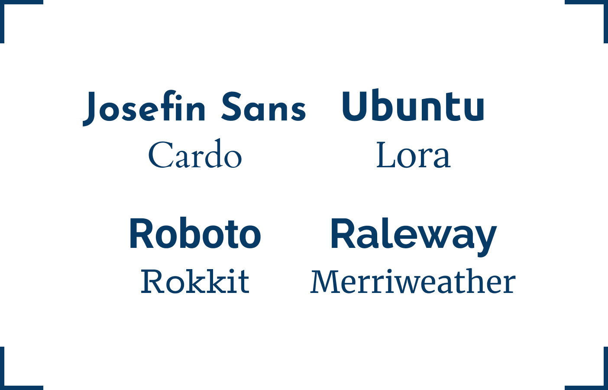
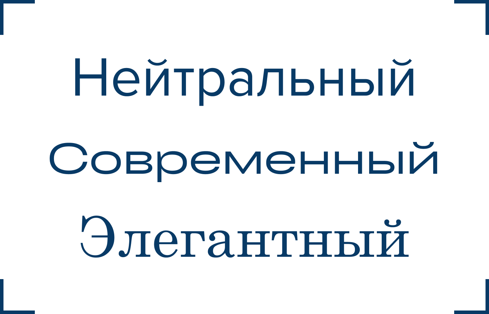

Какие бывают шрифты?
Покажем основные типы шрифтов и расскажем, как они устроены, чем они отличаются друг от друга.
Читать главу

Как сочетать шрифты?
Порой, одного шрифта может быть недостаточно для большого проекта. В таком случае нужно уметь собирать контрастные шрифтовые пары.
Читать главуКакие правила в типографике?
Научим, как избежать типичных ошибок в тексте, строках, переносах, а также при совмещении текстовых блоков друг с другом
Читать главу

О характерах шрифта
Выбор шрифтов для вашего проекта всегда должен быть обоснован. Мы расскажем, какие характеры есть у разных шрифтов и как подобрать подходящий.
Читать главу